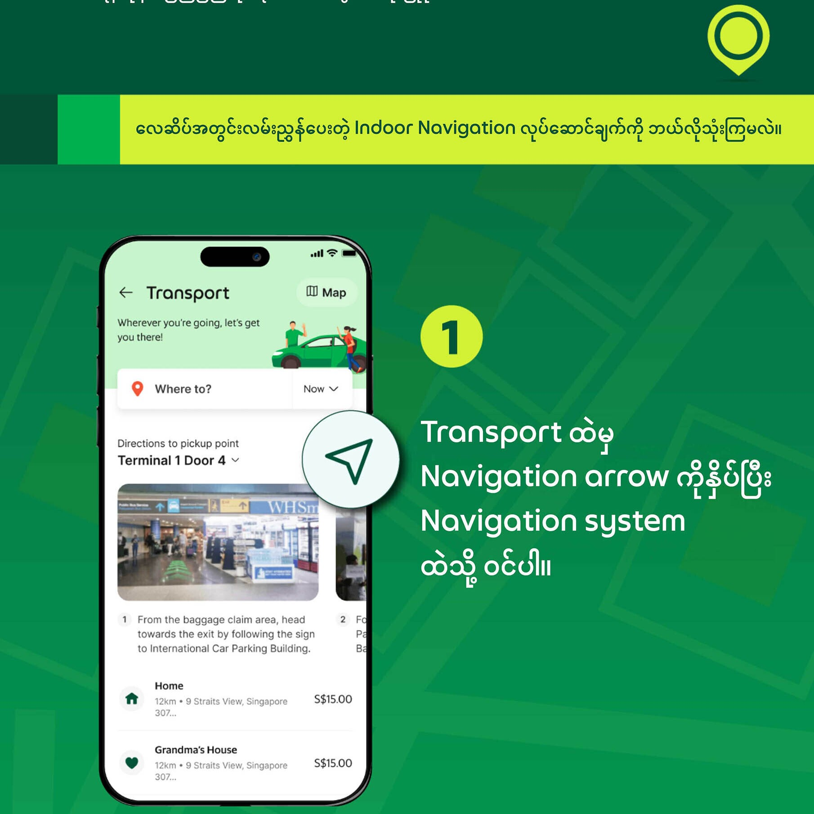
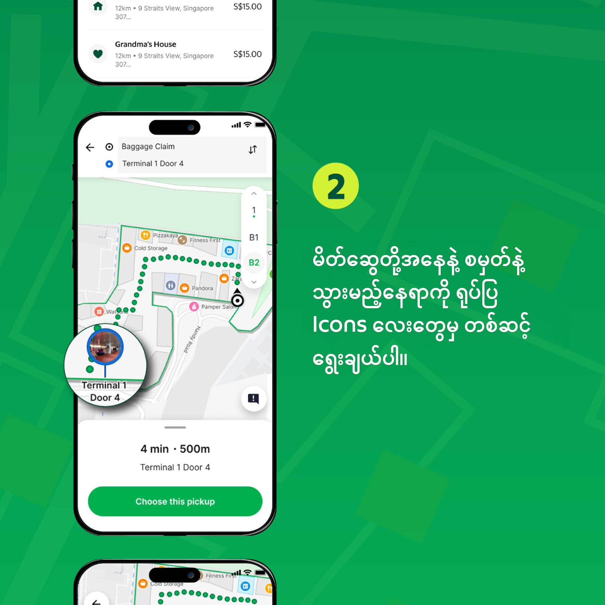
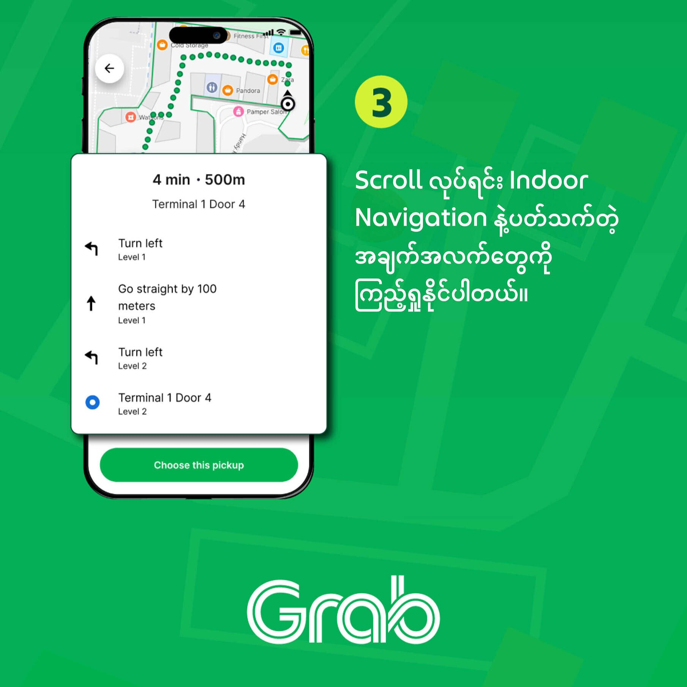
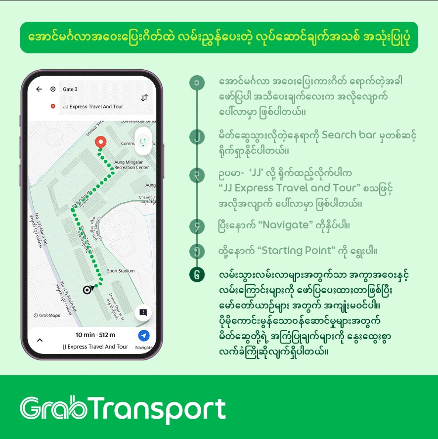

Indoor Navigation
Indoor Navigation Description
Implementing airport indoor navigation in Myanmar has been challenging due to the prevailing political situation, impacting our ability to effectively negotiate with relevant authorities. Technically, indoor navigation employs technologies such as Wi-Fi, Bluetooth beacons, and spatial anchors to determine user location and provide directions within buildings, contrasting with GPS-based outdoor navigation. Essential elements include georeferenced indoor maps, POI management, multi-level navigation capabilities, an indoor route engine, and the possibility of AR integration.
Objectives
Indoor navigation aims to transform the user experience within complex indoor spaces like airports and malls by achieving several key objectives:
- Expedited Wayfinding: Enable users to quickly and efficiently locate their desired destinations, particularly crucial in unfamiliar or sprawling venues.
- Elevated User Experience: Provide intuitive and accessible navigation tools that simplify wayfinding and enhance the overall experience, allowing users to easily locate points of interest such as shops, restaurants, airline counters, restrooms, and medical facilities.
- Increased Operational Efficiency: Empower service providers, such as drivers, to optimize their time and productivity by facilitating quick and accurate location finding within venues, leading to potential earnings increases.
- Optimized Crowd Management: Facilitate even distribution of foot traffic within venues, reducing congestion and improving safety and comfort for all users.
- Enhanced Accessibility: Improve accessibility for individuals with disabilities and others needing assistance by providing detailed indoor maps and navigation support.
- Actionable Data Insights: Collect georeferenced map and spatial data to continuously refine and improve the accuracy and functionality of the indoor navigation system.
- Seamless Indoor-Outdoor Integration: Create a fluid and uninterrupted navigation experience by seamlessly integrating indoor and outdoor navigation solutions, allowing users to navigate between environments effortlessly.
Airport Indoor Nav Sample Photos



Aung Mingalar Highway Station Indoor Navigation
 Finding the place you want inside Aung Mingalar Highway Station is now incredibly easy!
Thanks to the new navigation system in the Grab app, you can easily find the bus stop, restaurant, or other shops you're looking for.
As you can see in the picture, all you have to do is type the place you're looking for in the Search bar.
Then, after clicking Navigate and selecting the Starting Point, it will clearly show you the route you need to take.
Look at this picture and use the Grab app so you don't get lost at Aung Mingalar Station!
You can use this new navigation feature within the Grab Passenger app.
When you arrive at Aung Mingalar Highway Station, you should see a pop-up message asking if you'd like assistance navigating the station.
From there, you can select your desired destination, choose your pickup point, and the app will generate a route for you.
We really appreciate any feedback you can provide! If you notice any incorrect locations, POIs, or routes, please let us know.
Your input is essential for improving this feature.